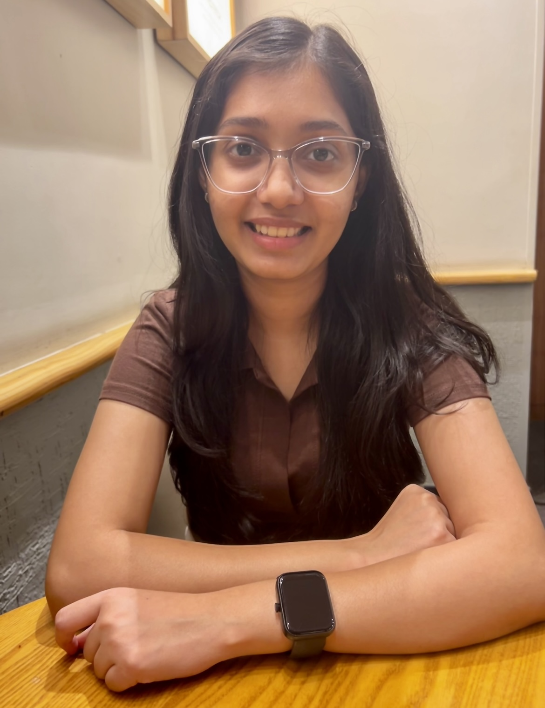
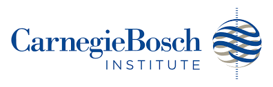

I'm a Senior Associate Data Scientist at Bank of New York, where I previously interned as an Applied AI Intern — my work on LLM prompt compression was accepted to the ICAIF Workshop on LLMs and Generative AI for Finance. I recently completed my Master of Science in Electrical and Computer Engineering (AI/ML Systems) at Carnegie Mellon University with a 4.00 GPA, and was a Graduate Fellow at the Carnegie Bosch Institute — Corporate Startup Lab. My research interests lie broadly in efficient machine learning and federated learning, and I worked in the LIONS research group led by Dr. Carlee Joe-Wong. I completed my B.Tech in Electrical and Electronics Engineering from NIT Andhra Pradesh, India. Prior to CMU, I worked as a Systems Engineer in Research at Tata Consultancy Services — Research, designing novel ultra wideband antennas and developing ML solutions to enhance the usability of Reconfigurable Intelligent Surfaces.
Senior Associate Data Scientist · Mar 2026 – Present
Applied AI Intern · Jun 2025 – Aug 2025

Graduate Fellow · Aug 2025 – Dec 2025
Research Strategy Development for Honda's HALO Project · Jan 2025 – Apr 2025
Systems Engineer (Developer) · Jul 2021 – Nov 2023
Joong Ho Choi, Jiayang Zhao, Jeel Shah, Ritvika Sonawane, Vedant Singh, Avani Appalla, Will Flanagan, Filipe Condessa
ICAIF Workshop on LLMs and Generative AI for Finance / [pdf]
Tapas Chakravarty, Poornima Surojia, Ritvika Sonawane, Sai Sarath Chandra Chaitanya Sayinedi, Meda Lakshmi Narayana, Soumya Chakravarty, Rowdra Ghatak
Patent Pending: US 2024/0372255A1 / [pdf]
Amartya Banerjee, Soumya Chakravarty, Ritvika Sonawane, Poornima Surojia, Tapas Chakravarty, Rowdra Ghatak
Notice of Allowance received from the US Patent Office — Patent will be granted: US 2024/0364007A1 / [pdf]
Amartya Banerjee, Soumya Chakravarty, Ritvika Sonawane, Poornima Surojia, Tapas Chakravarty, Rowdra Ghatak
APSCON 2024 / [pdf]
Soumya Chakravarty, Poornima Surojia, Ritvika Sonawane, Tapas Chakravarty, Achanna Anil Kumar, Rowdra Ghatak
MAPCON 2023 / [pdf]
Spearheaded a team to engineer and deploy a personalized movie recommendation system (SVD, collaborative filtering, SQL, API, Docker), optimizing search relevance and user engagement. Implemented CI/CD pipelines, A/B testing, model monitoring using MLFlow and Grafana, and load balancing, ensuring 100% uptime in production. Built scalable ML pipelines with Docker following MLOps best practices, with automated model updates deployed behind a load balancer.
Fine-tuned LLaMA-2 using QLoRA, implementing 4-bit quantization to enable efficient model adaptation on consumer hardware while preserving high performance and optimizing memory usage and training speed. Designed and executed parameter-efficient fine-tuning with Low-Rank Adapters, minimizing computational overhead while achieving effective model specialization for real-world NLP applications.
Developed a scalable search ranking system for streaming content, optimizing query relevance using TF-IDF, BM25, and BERT embeddings. The system improves content discovery by integrating collaborative filtering and content-based embeddings, leading to a 12% increase in NDCG score. A Flask API enables real-time ranked search queries, demonstrating efficient search optimization for streaming platforms.
Spring 2025, Carnegie Mellon University
Fall 2024, Carnegie Mellon University
Spring 2024, Carnegie Mellon University